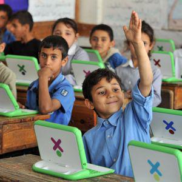
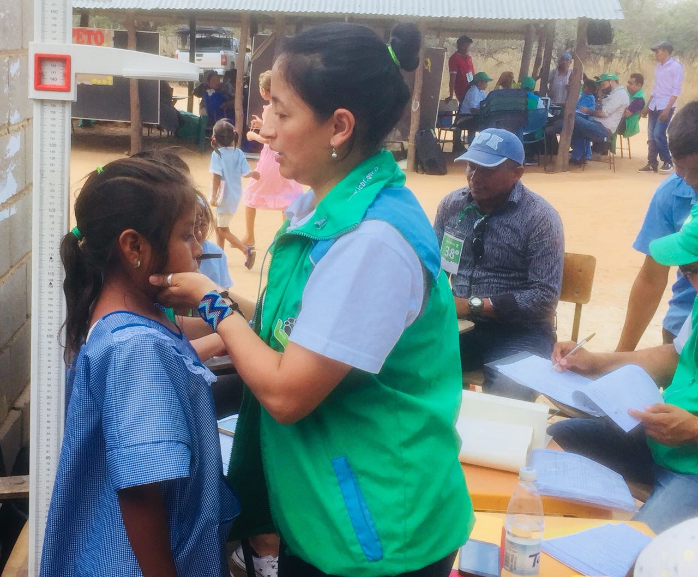

Sobre Nosotros
Somos una organización dedicada al cuidado y bienestar de los niños. Nuestra misión es proporcionar un entorno seguro y enriquecedor donde los niños puedan crecer y desarrollarse plenamente. Con un equipo de profesionales comprometidos, ofrecemos programas educativos y recreativos que promueven el crecimiento físico, emocional y social de los niños. Creemos en la importancia de crear una comunidad inclusiva y solidaria donde cada niño tenga la oportunidad de prosperar.
Misión
Nuestra misión es proporcionar un entorno seguro y enriquecedor para el desarrollo integral de los niños, promoviendo su bienestar físico, emocional y social a través de programas educativos y recreativos. Nos comprometemos a crear un entorno donde todos los niños se sientan protegidos y libres de cualquier tipo de peligro o abuso, fomentando la confianza y la seguridad en su entorno. Nos enfocamos en apoyar el crecimiento físico, mental y emocional de los niños, asegurando que cada uno tenga la oportunidad de alcanzar su máximo potencial. Esto incluye proporcionar acceso a servicios médicos, nutricionales y psicológicos esenciales, así como desarrollar programas educativos innovadores que estimulan el aprendizaje y la creatividad, adaptándose a las necesidades individuales de cada niño. Además, facilitamos espacios y actividades recreativas que permiten a los niños explorar, jugar y desarrollarse de manera saludable y equilibrada. Trabajamos de la mano con las familias para asegurarnos de que los niños reciban el apoyo necesario tanto en casa como en la comunidad.
Vision
Nos esforzamos por ser una organización líder en el cuidado infantil, creando comunidades inclusivas y solidarias donde cada niño tenga la oportunidad de prosperar y alcanzar su máximo potencial. Visualizamos un futuro donde cada niño es valorado y respetado por su individualidad, recibiendo el amor y el apoyo que necesita para crecer. Creamos comunidades donde la diversidad es celebrada y todos los niños, independientemente de su origen, tienen acceso a las mismas oportunidades. Fomentamos un espíritu de colaboración y apoyo mutuo entre las familias y los miembros de la comunidad para construir un entorno más fuerte y unido. Trabajamos incansablemente para eliminar las barreras al acceso a la educación de calidad, asegurando que todos los niños puedan aprender y desarrollarse. Además, promovemos prácticas sostenibles que aseguran el bienestar de los niños a largo plazo, incluyendo proyectos de salud, medio ambiente y recursos comunitarios. Adoptamos enfoques y tecnologías innovadoras para mejorar continuamente nuestros programas y servicios, garantizando que los niños reciban el mejor cuidado posible.
Proyectos
Descubre los proyectos que estamos apoyando y cómo tus donaciones están marcando la diferencia. Juntos, estamos creando un impacto positivo en nuestras comunidades.
Educación para Todos
Proporcionamos recursos educativos a comunidades desfavorecidas, asegurando que todos los niños tengan acceso a una educación de calidad. Nuestros programas incluyen la distribución de libros, material escolar y acceso a tecnología avanzada, adaptados a las necesidades de cada niño. Creemos firmemente que la educación es la llave para un futuro mejor, permitiendo que los niños desarrollen sus habilidades, potencien su creatividad y alcancen sus sueños.
Salud y Bienestar
Apoyamos clínicas móviles para llevar atención médica integral a áreas rurales, asegurando que los niños reciban la atención médica que necesitan, desde chequeos básicos hasta servicios especializados. Nuestra meta es mejorar la salud y el bienestar de todos los niños, proporcionando no solo cuidados médicos, sino también programas de nutrición y educación sobre salud para empoderarlos con el conocimiento de cuidar de sí mismos y de sus comunidades.
Ayúdanos a Hacer la Diferencia
Con tu apoyo, podemos cambiar vidas y construir un futuro mejor para todos.
Haz una Donación